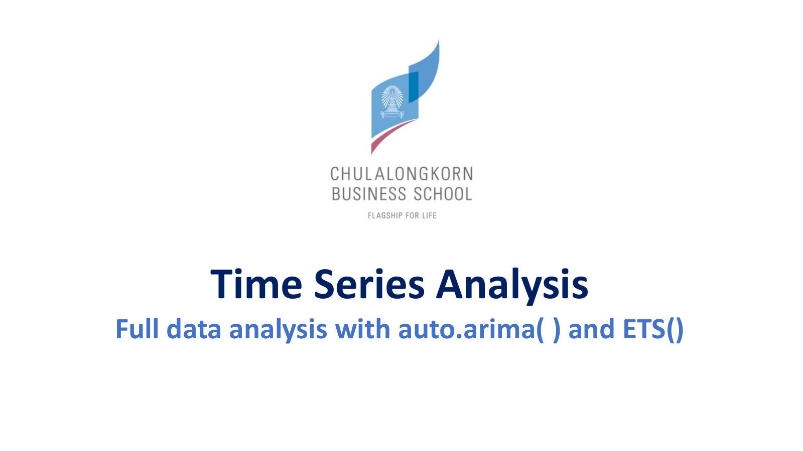
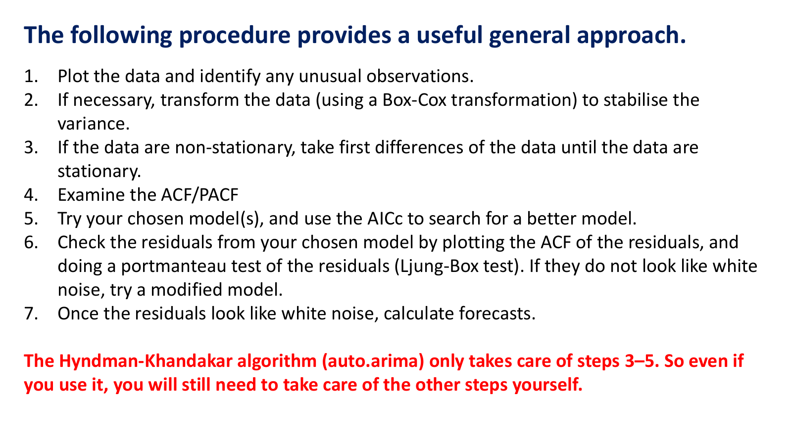
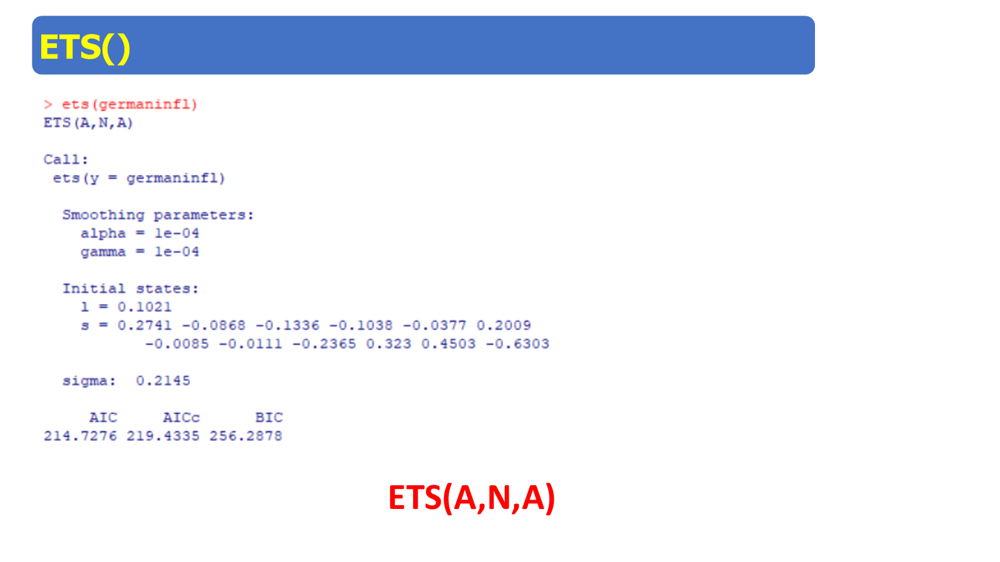
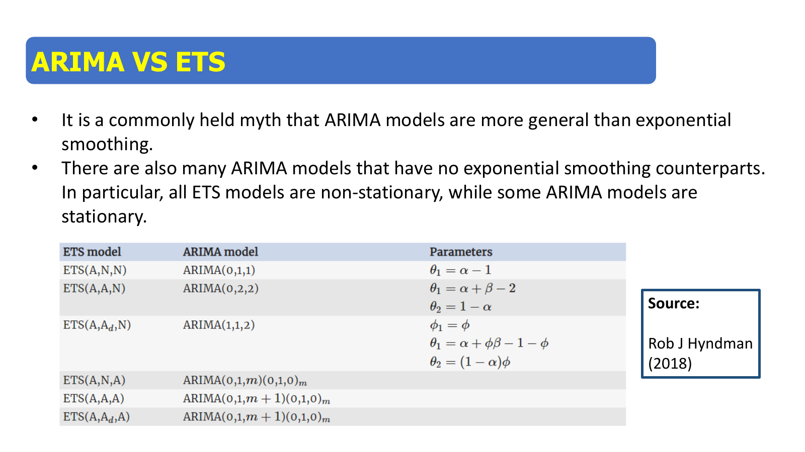
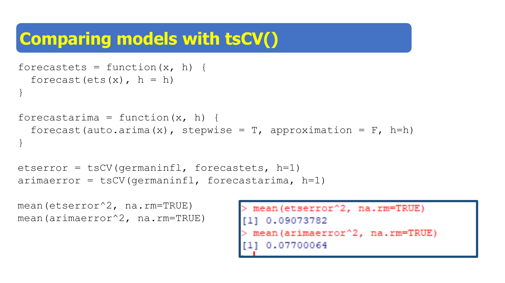
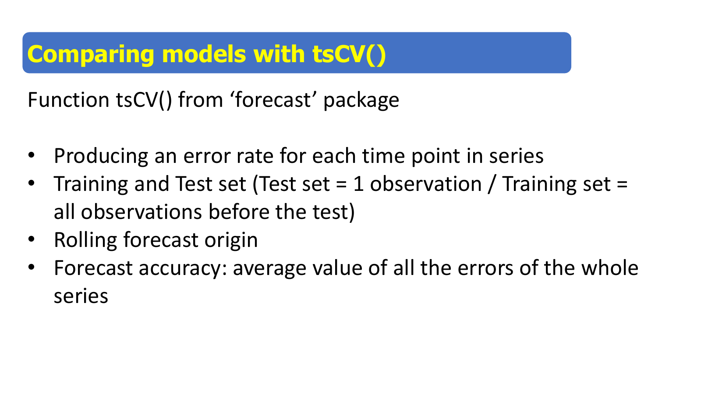

สไลด์ต้นฉบับของตอนนี้ (หน้า 1–3)



Slide 9 หน้า 1–16 — Full data analysis with auto.arima() and ETS()
Lesson 7–9 เลือก p, d, q, P, D, Q ด้วยการดูกราฟและตาราง AIC ซึ่งเป็น "subjective approach" ของสมัยก่อน บทนี้คือวิธีที่ใช้จริงและเป็นแนวของข้อสอบภาคปฏิบัติ auto.arima ค้นหา d, D, p, q, P, Q ให้อัตโนมัติด้วย AICc แต่ช่วยแค่ขั้น 3–5 การแปลงข้อมูลและตรวจ residual ยังต้องทำเอง ETS กับ ARIMA เป็นคนละตระกูล บางคู่เทียบเท่ากัน เช่น ETS(A,N,N) = ARIMA(0,1,1) แต่ห้ามเทียบ AIC ข้ามตระกูล สิ่งที่ใช้เทียบแทนคือ tsCV ซึ่งวัดความแม่นยำของการพยากรณ์ด้วย rolling forecast origin และใช้ได้กับทุกตระกูล
เรื่องที่ระบุว่าเกี่ยวกับข้อสอบในบทนี้มีดังนี้
สไลด์ชุดนี้ทำมานานตั้งแต่ยังไม่มีคำสั่ง auto.arima7 วิชาเดิมจบที่ Box-Jenkins แต่เทอมนี้จะมี frequency domain และ ARCH/GARCH ด้วย auto.arima คือเครื่องมือที่ "ช่วยชีวิต" จากการลองผิดลองถูก มันใช้ algorithm ของ Hyndman และ Khandakar (2008) ซึ่งรวมสามอย่าง คือ unit root test เพื่อเลือก d และ D, การหา AICc ต่ำสุดเพื่อเลือก p, q, P, Q และ MLE เพื่อประมาณพารามิเตอร์ AICc คือ AIC ที่ปรับสำหรับข้อมูลน้อย จึงแม่นยำกว่า AIC8
\(\mathrm{AICc}=\mathrm{AIC}+\dfrac{2k(k+1)}{n-k-1}\)
ตัวอย่าง german ในตอน 2 มี AIC = −2.77, k = 5 (φ, θ₁, θ₂, Θ₁ และ σ²) และ n = 118 − 12 = 106 หลัง seasonal difference จึงได้ส่วนเพิ่ม \(2(5)(6)/(106-6)=0.6\) และ AICc = −2.17 ตรงกับ output เมื่อ n ใหญ่ ส่วนเพิ่มเข้าใกล้ศูนย์ AICc จึงเท่ากับ AIC ค่าเริ่มต้นของ auto.arima ใช้การประมาณเพื่อให้เร็ว อาจไม่เจอ AICc ต่ำสุดจริง ถ้าต้องการค้นละเอียดให้ใส่ approximation = FALSE และ stepwise = FALSE
การวิเคราะห์ข้อมูลทั้งชุดมีเจ็ดขั้น9
สไลด์สรุปว่า The Hyndman-Khandakar algorithm (auto.arima) only takes care of steps 3–5. ขั้น 3–5 คือส่วนที่ไม่ต้องดูกราฟ ACF/PACF หรือตาราง AIC/BIC เองอีกแล้ว เพราะ auto.arima แนะนำ d และ D ให้10


german คืออัตราเงินเฟ้อรายเดือนของเยอรมนี มกราคม 2008 ถึงตุลาคม 2017 รวม 118 ค่า ไม่มี trend มี seasonal และ variance คงที่11 เป็นข้อมูลชุดเดียวกับ Lesson 4 ซึ่ง ETS ได้ ETS(A,N,A) ต้องสร้างด้วย ts(data, start = 2008, frequency = 12) เพื่อให้ R รู้ว่า s = 12 คำสั่ง auto.arima มีอาร์กิวเมนต์สามตัวที่ใช้ทุกครั้ง12
stepwise = TRUE ค้นแบบเพิ่มหรือลดอันดับทีละขั้นจากโมเดลปัจจุบัน เร็วกว่า เทียบได้กับ stepwise variable selection ในวิชา regression ถ้า FALSE จะลองทุกโมเดล ใช้เวลานาน โดยเฉพาะ seasonaltrace = TRUE แสดงทุกโมเดลที่ลองพร้อม AICc ราว 20–30 โมเดล "ไม่ได้จำเป็นขนาดนั้น แต่อยากให้นิสิตเรียนรู้"approximation = FALSE ถ้า TRUE จะใช้ conditional sum of squares และ AICc แบบประมาณระหว่างค้น (โมเดลสุดท้ายยังใช้ MLE) เหมาะกับข้อมูลยาว 1000–3000 จุด german สั้นจึงตั้ง FALSE
trace แต่ละบรรทัดเขียน ARIMA(p,d,q)(P,D,Q)[12] ตามด้วย AICc วงเล็บแรกคือส่วน non-seasonal วงเล็บหลังคือส่วน seasonal13 บรรทัดที่เป็น Inf คือโมเดลที่ฟิตไม่ได้ เช่น ไม่นิ่ง เมื่อรันจริงได้ ARIMA(1,0,2)(0,1,1)[12] with drift ที่ AICc 0.049 ก่อน แล้วลองตัด drift ได้ −2.166 ต่ำกว่า จึงเลือก ARIMA(1,0,2)(0,1,1)[12] ค่าสัมประสิทธิ์ที่ได้คือ
Coefficients:
ar1 ma1 ma2 sma1
-0.7947 0.7786 0.2115 -0.7618
s.e. 0.1201 0.1469 0.1013 0.1291
sigma^2 = 0.04883: log likelihood = 6.38
AIC=-2.77 AICc=-2.17 BIC=10.55
p = 1, d = 0, q = 2, P = 0, D = 1, Q = 1, s = 12 ไม่มี intercept เพราะ D = 1
\(1-\phi_1B=1-(-0.7947)B=1+0.7947B\)
\(1+0.7786B+0.2115B^2\) และ \(1-0.7618B^{12}\)
\((1+0.7947B)(1-B^{12})X_t=(1+0.7786B+0.2115B^2)(1-0.7618B^{12})w_t\), \(\hat\sigma=\sqrt{0.04883}=0.221\)
arima(germaninfl, order = c(1,0,2), seasonal = list(order = c(0,1,1), period = 12))diagnostic ด้วย histogram, QQ plot และ tsdiag ผ่านหมด16 อีกเครื่องมือคือ checkresiduals() ของ package forecast ซึ่งไม่เคยสอนมาก่อน17 มันรวม Ljung-Box ทุก lag เป็นค่าเดียว เรียกว่า portmanteau test "สมัยก่อนทำ Ljung-Box แยกตาม lag หลัง ๆ เริ่มรวมกัน"
Ljung-Box test data: Residuals from ARIMA(1,0,2)(0,1,1)[12] Q* = 15.035, df = 20, p-value = 0.7744 Model df: 4. Total lags used: 24
ผลนี้ใช้ lag 1–24 (สองรอบ seasonal) หัก df ด้วยจำนวนพารามิเตอร์ 4 ได้ df = 20 และ p = 0.7744 > 0.05 จึงไม่ reject H0 โมเดลเหมาะสม18 พยากรณ์ด้วย forecast(germaninflarima) ได้พฤศจิกายน 2017 = 0.0805, ธันวาคม 0.3241, มกราคม 2018 = −0.6207 ช่วง 80% ของพฤศจิกายนคือ −0.203 ถึง 0.364 และ 95% คือ −0.353 ถึง 0.514 ในวิชานี้ใช้ point forecast เป็นหลัก19 ในคลิปพูดว่าแถบเป็น "85 หรือ 90" แต่ค่าเริ่มต้นของ forecast() คือ 80% และ 95%


สไลด์เริ่มด้วยการแก้ความเชื่อผิด It is a commonly held myth that ARIMA models are more general than exponential smoothing. ความจริงคือสองตระกูลซ้อนกันบางส่วน ETS แบบ linear บางตัวเทียบเท่า ARIMA บางตัว ARIMA จำนวนมากไม่มีคู่ใน ETS และ ETS ทุกตัวไม่นิ่ง ขณะที่ ARIMA บางตัวนิ่ง

ตารางบนสไลด์ (R และ Hyndman ใช้ MA แบบบวก) มีสองแถวแรกที่ต้องจำ20 แถวแรกคือผลเดียวกับ Lesson 7 คือ α = 1 + θ ถ้า θ = −0.6 จะได้ α = 0.4 ถ้าโจทย์ใช้ MA แบบลบ \(w_t-\theta w_{t-1}\) จะเป็น α = 1 − θ แถวสองคือ Holt เช่น α = 0.8, β = 0.1 ได้ θ₁ = 0.8 + 0.1 − 2 = −1.1 และ θ₂ = 1 − 0.8 = 0.2 ARIMA ของแถวนี้มี d = 221 ETS แบบ multiplicative (เช่น M,A,M ของ Xbox) ไม่มีคู่ใน ARIMA
| ETS | ARIMA | พารามิเตอร์ |
|---|---|---|
| ETS(A,N,N) | ARIMA(0,1,1) | θ₁ = α − 1 |
| ETS(A,A,N) | ARIMA(0,2,2) | θ₁ = α + β − 2, θ₂ = 1 − α |
| ETS(A,A_d,N) | ARIMA(1,1,2) | φ₁ = φ, θ₁ = α + φβ − 1 − φ, θ₂ = (1 − α)φ |
| ETS(A,N,A) | ARIMA(0,1,m)(0,1,0)ₘ | |
| ETS(A,A,A) | ARIMA(0,1,m+1)(0,1,0)ₘ | |
| ETS(A,A_d,A) | ARIMA(0,1,m+1)(0,1,0)ₘ |
α = 0.7851, β = 0.0001 ตารางบอกว่าเทียบเท่า ARIMA(0,2,2) ที่ θ₁ = −1.2148, θ₂ = 0.2149
ได้ θ₁ = −1.0637, θ₂ = 0.0637 ไม่ตรงกับข้อ 1
ทั้งสองชุดแยกตัวประกอบได้ (1 − B)(1 − cB): \(1-1.2148B+0.2149B^2\approx(1-B)(1-0.2149B)\) และ \(1-1.0637B+0.0637B^2=(1-B)(1-0.0637B)\) มีราก MA = 1 พอดี (β ≈ 0 ทำให้เกิดเหตุนี้) ตัวประมาณอยู่บนขอบ invertible ผลจึงไวต่อวิธีประมาณ ETS ใช้ likelihood ของ state space ส่วน arima ใช้ ARIMA likelihood

ETS เลือก ETS(A,N,A) α = 0.0001, γ = 0.0001, σ = 0.2145, AIC = 214.73, AICc = 219.4322 ตามตารางเทียบได้กับ ARIMA(0,1,12)(0,1,0)₁₂ ซึ่งต่างจากที่ auto.arima เลือก α และ γ ที่เกือบเป็นศูนย์แปลว่า level และรูปแบบฤดูกาลแทบไม่เปลี่ยนตลอด 10 ปี ค่าพยากรณ์พฤศจิกายน 2017 – มกราคม 2018 = 0.015, 0.376, −0.528 ใกล้เคียงกับ ARIMA23
หน้า 9 ซ้ำกับหน้า 5 ใช้ทวนก่อนเข้าเรื่องการเทียบ หน้า 10 วางกติกา AIC/BIC ใช้เลือก ARIMA จากหลาย ARIMA หรือ ETS จากหลาย ETS แต่ cannot be used to compare between ETS and ARIMA models เพราะต่างตระกูลและ likelihood คำนวณต่างกัน เช่น german ได้ ETS AIC = 214.73 และ ARIMA AIC = −2.77 ตัวเลขต่างกันมากแต่ไม่ได้แปลว่า ARIMA ดีกว่า 217 หน่วย ARIMA ใช้ likelihood ของข้อมูลหลัง seasonal difference (106 ค่า) ส่วน ETS ใช้ข้อมูลเดิม 118 ค่า เหมือนการเทียบคะแนนสอบสองวิชาที่คะแนนเต็มไม่เท่ากัน ต้องใช้ Forecast accuracy (Ex. MSE) แทน เหตุผลเดียวกันใช้กับ ARIMA ที่ d ต่างกัน (Lesson 9 ตอน 5)


tsCV สร้าง error ทุกจุดเวลา training set คือข้อมูลทั้งหมดก่อนจุดทดสอบ test set คือหนึ่งค่าถัดไป แล้วเลื่อนจุดเริ่มพยากรณ์ไปเรื่อย ๆ (rolling forecast origin) ความแม่นยำคือค่าเฉลี่ยของ error ทั้งอนุกรม ในคลิปเรียกวิธีนี้ว่า "leave one out cross validation"24 รอบหนึ่งใช้ n − 1 จุดพยากรณ์จุดสุดท้าย รอบสองใช้ n − 2 จุดพยากรณ์จุดถัดไป และฟิตโมเดลใหม่ทุกรอบ จึงรันนาน 5–10 นาที คำว่า leave-one-out ใน cross-sectional หมายถึงตัดจุดใดก็ได้ออก แต่ tsCV ใช้เฉพาะอดีตพยากรณ์อนาคต ซึ่งถูกต้องสำหรับอนุกรมเวลา เพราะในงานจริงไม่มีข้อมูลอนาคตให้ใช้ ตัวอย่าง n = 5 กับ h = 1 ใช้ {1} พยากรณ์ 2, {1, 2} พยากรณ์ 3, {1, 2, 3} พยากรณ์ 4 และ {1, …, 4} พยากรณ์ 5 ได้ error สี่ค่า จุดแรกไม่มี error ใน R จึงเป็น NA และต้องใส่ na.rm = TRUE

โค้ดสร้างฟังก์ชันพยากรณ์สองตัวแล้วส่งให้ tsCV ฟังก์ชันแรก forecastets = function(x, h) forecast(ets(x), h = h) รับข้อมูลช่วง training แล้วคืนค่าพยากรณ์ ซึ่ง tsCV จะเรียกซ้ำทุกจุด ฟังก์ชันที่สอง forecastarima = function(x, h) forecast(auto.arima(x), stepwise = T, approximation = F, h = h) เหมือนกันแต่เลือก ARIMA ใหม่ทุกครั้ง (ในโค้ดของสไลด์ stepwise, approximation ถูกส่งให้ forecast ไม่ใช่ auto.arima จึงไม่มีผล) tsCV(germaninfl, forecastets, h = 1) คืน error ของการพยากรณ์หนึ่งก้าวทุกจุด ซึ่งต้องใช้ h = 125 แล้ว mean(etserror^2, na.rm = TRUE) คือ MSE ที่ข้าม NA
ผลบนสไลด์คือ MSE ETS = 0.09074 และ MSE ARIMA = 0.0770026 ARIMA ต่ำกว่าราว 15% จึงชนะ (รันซ้ำด้วย forecast เวอร์ชันปัจจุบันได้ ETS 0.0863 และ ARIMA 0.0770 ข้อสรุปเหมือนเดิม) RMSE คือ √0.077 = 0.278 เทียบกับ σ̂ = 0.221 ของโมเดลที่ฟิตกับข้อมูลทั้งหมด error นอกตัวอย่างจึงใหญ่กว่าในตัวอย่าง ซึ่งเป็นปกติ

ข้อมูลชุดที่สองคืออัตราการมีส่วนร่วมในกำลังแรงงานอายุ 25–54 ปีของสิงคโปร์ รายปี 1980–2007 รวม 28 ค่า ขึ้นจากราว 70 เป็น 83.5 และเกิน 100 ไม่ได้ ข้อมูลรายปีไม่มี seasonal และสั้นมาก27

auto.arima ได้ ar1 = −0.3690 (s.e. 0.1763), drift = 0.4904 (s.e. 0.0720), σ² = 0.2779, AIC = 46.1, AICc = 47.14 โดย drift คือ intercept ของผลต่าง28 เขียนได้ \(\nabla X_t-0.4904=-0.369(\nabla X_{t-1}-0.4904)+w_t\) คืออัตราเพิ่มเฉลี่ย 0.49 จุดต่อปี สไลด์แสดงว่าได้ค่าเดียวกับ arima(diff(singapur), order = c(1,0,0)) ที่มี intercept 0.4904 พยากรณ์ 2008–2010 = 84.06, 84.53, 85.03

ETS(M,Ad,N) คือ error คูณ trend บวกแบบ damped ไม่มี seasonal α = 0.528, β = 0.0001, φ = 0.959 (Lesson 4) หรือ double exponential smoothing แบบ damped29 φ ทำให้ค่าพยากรณ์ค่อย ๆ โค้งเข้า เหมาะกับข้อมูลที่มีเพดาน 100

MSE ETS = 0.6198 และ MSE ARIMA = 0.5471 ARIMA ชนะอีกครั้ง30 แต่ข้อมูลมีแค่ 28 ค่า ความต่างนี้จึงไม่แน่นอนนัก และ auto.arima กับ ets ในรอบแรก ๆ ของ tsCV ใช้ข้อมูลเพียงไม่กี่ค่า
ar1 = 0.2225 ไม่มี drift พยากรณ์ 83.57, 83.58, 83.58 เกือบราบ
ar1 = −0.369, intercept 0.4904 พยากรณ์ของผลต่าง 0.561, 0.465, 0.500 "ตรงนี้จะกลายเป็น 100" ถ้าไม่ undifference
diffinv(..., xi = singapur[28]) เริ่มจาก 83.5 ได้ 84.06, 84.53, 85.03 เท่ากับ auto.arima with drift
Arima(singapur, order = c(1,1,0), include.drift = TRUE) หรือ auto.arima ข้อสรุปท้ายคลิปคือใส่ d ในคำสั่ง32 แต่ต้องตรวจว่าต้องมี drift หรือไม่
ไฟล์ R_codes.txt, german.txt และ singapore.txt อยู่ในโฟลเดอร์ CLASS 9 ต้องโหลด package forecast ลองฝึกต่อในแบบฝึก Lesson 10 หรืออ่านต่อ Lesson 11 — Multivariate time series
ตัวเลขยกในเนื้อหาชี้มาที่รายการนี้ แต่ละรายการระบุคลาสและนาทีของคลิป พร้อมถ้อยคำในคลิปเมื่อมี
| หน้า | เนื้อหา | อยู่ในตอน |
|---|---|---|
| 1–3 | ปก, auto.arima, เจ็ดขั้น | ตอน 1 |
| 4 | German inflation | ตอน 2 |
| 5 | ARIMA VS ETS | ตอน 3 |
| 6–7 | อาร์กิวเมนต์และผล auto.arima | ตอน 2 |
| 8–10 | ETS(A,N,A), ARIMA VS ETS, AIC ข้ามตระกูล | ตอน 3 |
| 11–12 | tsCV | ตอน 4 |
| 13–16 | Singapore | ตอน 5 |
| 17–77 | Multivariate time series | etc — สอนใน Lesson 11 |
แหล่งอื่นที่ใช้: Class 9-2 ช่วง 0:31–1:17 (ตอน 1–5), ไฟล์ R_codes.txt, german.txt และ singapore.txt (CLASS 9), sales.txt (CLASS 4)